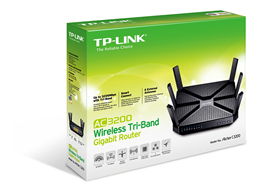
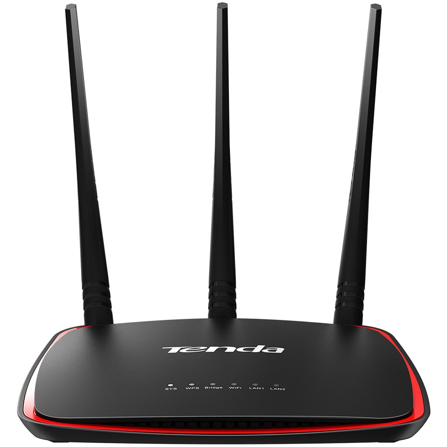

Tinklo įranga

Avitela.lt atsinaujina! Jūs naudojatės nauja versija, jei radote klaidą prašome pranešti 8 700 38500 arba [email protected]
Šioje interneto svetainėje naudojami slapukai, skirti svetainės funkcionalumui gerinti. Plačiau apie tai galite rasti mūsų privatumo politikoje . Sutinku 0 Meniu Navigation
Prekių katalogas
Buitinė technika Telefonai ir laikrodžiai Kompiuterinė technika Televizoriai ir garso technika Foto ir video technika Namų apyvokos prekės Video žaidimai ir įranga Laisvalaikio ir sporto prekės Grožis ir sveikata Buitinė technika Stambi virtuvės technika Šaldytuvai Šaldikliai ir šaldymo dėžės Indaplovės Viryklės Kaitlentės Gartraukiai Mikrobangų ir elektrinės krosnelės Priedai ir detalės Įmontuojama virtuvės technika Įmontuojamos orkaitės Įmontuojamos kaitlentės Įmontuojami šaldytuvai Įmontuojamos indaplovės Įmontuojami gartraukiai Įmontuojamos mikrobangų krosnelės Įmontuojami komplektai Priedai ir detalės Įmontuojami kavos aparatai Įmontuojami pašildymo stalčiai Kavos aparatai ir priedai Kavos aparatai Kavamalės Pieno plakikliai Kavos apratų valymo priemonės Kiti priedai Kava ir arbata Jura parduotuvė Skalbimo ir rūbų priežiūros technika Skalbimo mašinos Džiovyklės Skalbyklės - džiovyklės Lygintuvai ir lyginimo sistemos Drabužių garintuvai Pūkų surinkėjai Siuvimo mašinos ir reikmenys Maisto ruošimo prietaisai Virduliai Trintuvai ir smulkintuvai Kokteilinės Sulčiaspaudės Virtuviniai kombainai Mėsmalės Skrudintuvai Pjaustyklės Plaktuvai Griliai Sumuštinių keptuvai Garų puodai Daugiafunkciniai puodai Gruzdintuvės Vaflinės Vaisių džiovyklės Ledų ir jogurto gaminimo aparatai Gėrimų gaminimo aparatai Kiti prietaisai Dulkių siurbliai ir priedai Dulkių siurbliai Dulkių siurbliai-šluotos Dulkių siurbliai-robotai Dulkių siurblių priedai Smulkūs virtuvės prietaisai Virtuvinės svarstyklės Galąstuvai Vandens filtrai, ąsočiai Vakuumavimo įranga Klimato kontrolės technika Šildytuvai Ventiliatoriai Oro drėkintuvai Oro sausintuvai Oro kondicionieriai Meteorologinės stotelės Telefonai ir laikrodžiai Mobilieji telefonai Apple Samsung Huawei Xiaomi Kiti išmaniųjų telefonų gamintojai Mygtukiniai telefonai Mobiliųjų telefonų priedai Išorinės baterijos Asmenukių lazdos, stabilizatoriai ir laikikliai Dėklai Ekrano apsaugos Laisvų rankų įranga Krovikliai Akumuliatoriai Telefonų laidai ir jungtys Kiti priedai Išmanieji laikrodžiai ir apyrankės Android laikrodžiai Apple laikrodžiai Sportiniai laikrodžiai ir apyrankės Telefonų aparatai GPS Navigacijos Kompiuterinė technika Stacionarūs kompiuteriai Nešiojamieji kompiuteriai Nešiojamieji kompiuteriai Nešiojami kompiuteriai žaidimams Nešiojamų kompiuterių maitinimo šaltiniai Krepšiai, kuprinės ir dėklai Žaidimų įranga Gaming pelės Gaming klaviatūros Gaming ausinės Stacionarūs gaming kompiuteriai Streamo įranga Gaming monitoriai Kėdės Planšetiniai kompiuteriai ir elektroninės knygos Planšetiniai kompiuteriai Elektroninės knygos Dėklai Ekrano apsaugos Kiti priedai Kompiuterių priedai Monitoriai ir projektoriai Klaviatūros, pelės ir kilimėliai Grafinės planšetės Internetinės kameros Kompiuterių kolonėlės Kompiuterių mikrofonai Nepertraukiamo maitinimo šaltiniai Laidai, jungtys ir adapteriai Valymo priemonės Stalinės lempos Kiti priedai Kompiuterių komponentai Pagrindinės plokštės Operatyvi atmintis Vaizdo plokštės Standieji diskai Maitinimo šaltiniai Optiniai įrenginiai Korpusai Aušinimo įranga Kompiuteriniai kabeliai Kiti priedai Išorinės duomenų laikmenos Išoriniai kietieji diskai ir priedai USB raktai CD-DVD diskai ir priedai Programinė įranga Operacinės sistemos Antivirusinės programos Taikomosios programos Tinklo įranga Bevielio ryšio įranga Laidinė įranga Spausdintuvai, skeneriai ir priedai Spausdintuvai Skeneriai 3D spausdintuvai Popierius Rašalų kasetės ir toneriai TV ir garso technika Televizoriai LED | OLED | QLED Iki 32" 32" iki 43" 43" iki 55" 55" ir daugiau Ekranų priežiūros priemonės TV priedai Antenos TV imtuvai Media grotuvai Nuotolinio valdymo pulteliai Priedėliai Laidai ir jungtys Laikikliai ir tvirtinimo sistemos Staliukai Namų kino ir "soundbar" garso sistemos "Soundbar" sistemos Namų kino sistemos DVD ir Blu-Ray grotuvai Projektoriai Garso technika Ausinės Nešiojamos ir stacionarios kolonėlės Kolonėlių laikikliai Stiprintuvai ir grotuvai Muzikiniai centrai Magnetolos Plokštelių grotuvai Radijo prietaisai MP3 ir MP4 grotuvai Mikrofonai Diktofonai Megafonai Automobilių garso ir vaizdo įranga Automagnetolos Autostiprintuvai Automobilinės kolonėlės, garsiakalbiai FM moduliatoriai Vaizdo registratoriai Muzikos instrumentai ir priedai Klavišiniai Styginiai Stovai Gitarų stygos Foto ir video technika Fotoaparatai Skaitmeniniai fotoaparatai Veidrodiniai fotoaparatai Sisteminiai fotoaparatai Momentiniai fotoaparatai Filmavimo kameros Vaizdo kameros Veiksmo kameros Vaizdo registratoriai Stebėjimo kameros Foto ir video priedai Atminties kortelės Objektyvai, filtrai ir blykstės Trikojai ir stabilizatoriai Veiksmo kamerų priedai Dėklai ir kuprinės Akumuliatoriai ir įkrovikliai Valymo priemonės Kiti priedai Namų apyvokos prekės Virtuvės ir stalo reikmenys Keptuvės Puodai Kepimo indai, formos, popierius Stalo įrankiai Kiti virtuvės įrankiai Puodeliai, stiklinės Gertuvės, termo puodeliai Pjaustymo lentelės Arbatinukai Kavinukai Serviravimo reikmenys Maisto saugojimo indai Kiti priedai virtuvei Valymo priemonės Buitinės technikos valymo priemonės Skalbimo priemonės Valymo įrankiai Baterijos ir ilgikliai Baterijos Ilgikliai Baterijų krovikliai Dūmų detektoriai Namų dekoracijos Žvakės Kvapai namams Apšvietimas Kitos dekoracijos Išmanūs namai Dulkių siurbliai-robotai Stebėjimo kameros Išmanūs davikliai Asistentai - kolonėlės Apšvietimas Išmaniosios daigyklos ir sėklos Video žaidimai ir įranga Nešiojami kompiuteriai žaidimams Stacionarūs kompiuteriai žaidimams Virtualios realybės įranga Žaidimų konsolės PlayStation Xbox Nintendo Retro Žaidimai PlayStation Xbox Nintendo Išankstinis žaidimų užsakymas Papildymų kodai ir kortelės Žaidimų įranga ir priedai Valdymo pulteliai ir vairai Žaidimų ausinės Žaidimų pelės ir kilimėliai Žaidimų klaviatūros Žaidimo kėdės Kiti priedai Laisvalaikio ir sporto prekės Kepsninės ir priedai Kepsninės Kepsninių priedai Prieskoniai ir padažai Transporto priemonės Paspirtukai Elektriniai dviračiai Elektriniai motoroleriai Dronai ir priedai Dronai Dronų priedai Sporto technologijos Sportiniai laikrodžiai ir apyrankės Echolotai Sportinės ausinės Žaislai Vaikiški dviračiai Vaikiški paspirtukai Stalo žaislai Lego Grožis ir sveikata Plaukų šalinimo sistemos Epiliatoriai Fotoepiliatoriai Moteriški skustuvai Plaukų priežiūros prietaisai Plaukų džiovintuvai Plaukų tiesintuvai Formavimo šukos ir žnyplės Plaukų kirpimo mašinėlės Barzdaskutės ir priedai Barzdaskutės Barzdakirpės, trimeriai Vyriški skustuvai Priedai Dantų šepetėliai ir priedai Dantų šepetėliai Dantų šepetėlių antgaliai Burnos irigatoriai Grožio prietaisai Veido priežiūros prietaisai Kosmetiniai veidrodžiai Nagų priežiūros prietaisai Sveikatos prietaisai Kraujospūdžio aparatai Termometrai Vonios svarstyklės Šildomos antklodės ir kiti kūno šildytuvai Masažuokliai Hidromasažinės vonelės Alkotesteriai 8 700 38500
I-VII: 08:00 - 20:00 val.
0Palyginimas
00.00€
Prekių krepšelis
Jūsų prekių krepšelis tuščias Navigation
Parduotuvės
Akcijos
Dyson
Išparduotuvė
Paslaugos
Užsakymo informacija Rūšiuoti pagal: Žiūrimiausi Kaina (Žema Aukšta) Kaina (Aukšta Žema) Rodyti: 18 50 100 Filtras
Tinklo įranga
Filtras Rūšiuoti pagal: Žiūrimiausi Kaina (Žema Aukšta) Kaina (Aukšta Žema) Rodyti: 18 50 100 TP-LINK ARCHER C20 23.89€ 33.99€ Į krepšelį TP-LINK TL-WR840N 14.33€ 16.99€ Į krepšelį TP-LINK ARCHER C6 1200MBPS 100 39.99€ Į krepšelį TP-LINK ARCHER C1200 4P DUAL B 57.99€ 59.99€ Į krepšelį TP-LINK AC600 WiFi Nano USB Ad 11.99€ 14.99€ Į krepšelį TP-LINK TL-WR940N 20.06€ 25.99€ Į krepšelį TP-LINK TL-MR3420 22.68€ 33.99€ Į krepšelį TP-LINK TL-SG1005D 12.07€ 16.99€ Į krepšelį TP-LINK ARCHER C7 99.99€ Į krepšelį TP-LINK TL-SF1005D 8.79€ Į krepšelį Asus Router RT-N11P (EU) 802. 29.99€ Į krepšelį Archer C2300 TP-Link WRL maršrutizatorius 2300MBPS 1000M 4P Dual Band 129.99€ Į krepšelį ASUS RT-AC5300 802.11AC 59.99€ 62.99€ Į krepšelį ASUS RT-N12PLUS 25.99€ Į krepšelį TP-LINK TL-WN722N 10.13€ 10.99€ Į krepšelį TP-LINK TL-WA855RE 18.74€ 28.99€ Į krepšelį ADAPTERIS WI-FI TP-LINK TL-WN725N 150Mbps 7.49€ Į krepšelį ADAPTERIS TP-LINK ARCHER T3U W 18.99€ 19.99€ Į krepšelį 1 2 3 4 | Rodoma nuo 1 iki 18 iš 59 (4 puslapių) Ilgą laiką mes naudojamės viena gera privilegija - internetu. Namuose dažniausiai turime ne vieną prietaisą, kuris skleidžia mums interneto ryšį. Tačiau, tam, kad mes galėtume naudotis internetu visuose namuose, mums reikia įvairios tinklo įrangos, kurią galite rasti bet kurioje Avitela parduotuvėje. Norint, kad nekiltų jokių nesklandumų, jums reikėtų maršrutizatoriaus. Tai yra modemas, kuris paskirsto visas bevielio interneto apkrovas ir leidžia mėgautis sparčiu interneto ryšiu. Bevielio ryšio įrangą galite rasti už prieinamą kainą Avitela parduotuvėje, beto, konsultantas jums padės išsirinkti tinkamą įrangą, atsižvelgdamas į jūsų poreikius ir būsto dydį.KLIENTŲ APTARNAVIMAS IR EKSPERTŲ KONSULTACIJOS: 8 700 38500
8:00 - 20:00 I-VII [email protected]GAUKITE IŠSKIRTINIUS PASIŪLYMUS
Turėsite galimybę bet kada atsisakyti pranešimų gavimo.
Daugiau apie duomenų naudojimą, gavėjus, saugojimo terminus ir Jūsų teises. InformacijaAvitela
Apie mus Parduotuvės Kontaktai DUK Karjera Užsakymo informacija Svarbi informacijaPaslaugos
Pristatymas Grąžinimo sąlygos Pratęsta garantija Prekių draudimas Vartojimo kreditai Senos technikos surinkimas Garantinio aptarnavimo paraiškaPrekės ženklai
APPLE JURA MIELE DYSON Visi gamintojaiMūsų parduotuvės
© Visos teisės saugomos. 2020 UAB „Avitelos prekyba“ Pridėta į krepšelį Tęsti prekių paiešką PirktiFlared Shift Dress
Kiekis: 1 $324 Pridėta į krepšelį Viso: $324 Tęsti prekių paiešką Pirkti